Mottaka USER GUIDE
Mottakaユーザーガイド
実際の画面を見ながら、Mottakaの使い方をひとつずつ。
対象：Mottaka 1.0／Build 21 · 2026年10月18日更新
画面写真は既存の撮影例です。日付・データ・価格・一部の見た目は環境により異なります。画像をタップすると拡大できます。
1. Mottakaとは
Mottakaは、旅行やお出かけの持ち物をリストで管理し、出発前と持ち帰り時の確認ができるアプリです。予定ごとにチェック状態が分かれているので、同じリストを繰り返し使えます。
- 「リスト」で、旅行や用途ごとのリストと持ち物を作ります。
- 「カレンダー」で使う日付を選び、リストを登録します。
- その日のリストを開き、「出発前」で準備を確認します。
- 帰る前に「持ち帰り確認」へ切り替え、結果を確認します。
| 区分 | できること |
|---|---|
| 無料 | リスト・持ち物の作成と編集、写真・アイコン、コピー・並び替え、予定へのリスト登録、出発前・持ち帰り確認、削除済み項目の復元、使い方の閲覧 |
| Mottaka Plus | フォルダの新規作成・管理と予定への追加、壁紙や表示設定の変更、iCloud Driveへの手動・自動バックアップと新規のデータ復元 |
データは端末ごとに保存されます。同じApple Accountで使っても、iPhoneとiPadのアプリ内データは自動同期されません。移し替えにはバックアップと復元を使います。
アプリ内の「設定」→「使い方」にも、9ページの簡易ガイドがあります。
2. リストと持ち物を作る
まずは「リスト」タブから。写真やアイコンを目印に、用途ごとにまとめます。
「リストを追加」から始める

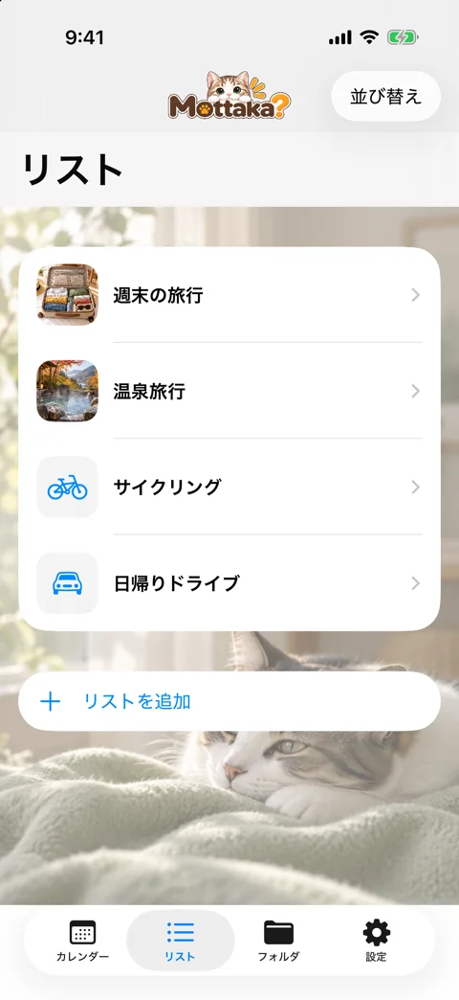
画面下の「＋ リストを追加」をタップ。名前を入力し、必要に応じて写真やアイコンを選んで保存します。
リストを開いて持ち物を追加

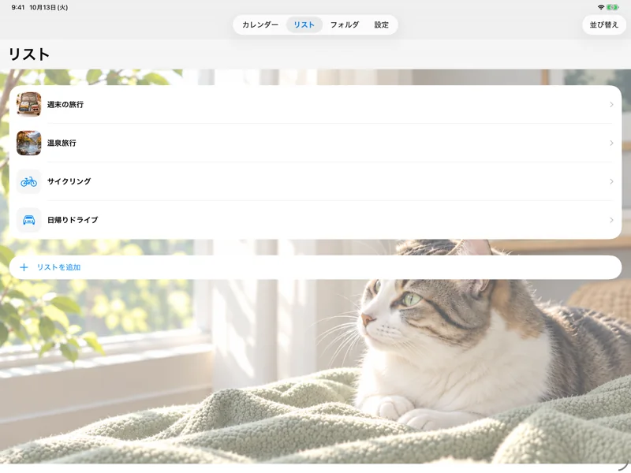
作成したリスト名をタップし、次の画面の「持ち物を追加」へ進みます。掲載写真は、リストを開く前の一覧です。
名前を入力して保存する
新しいリストを保存する

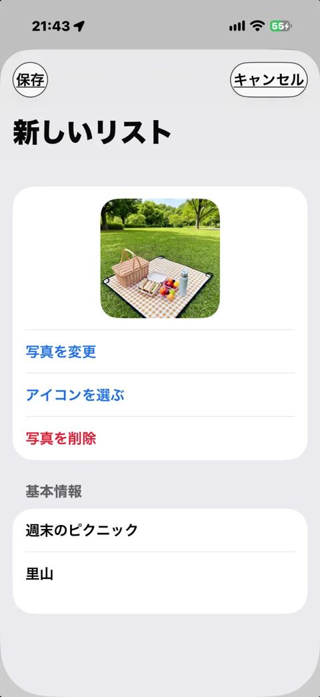
「名前」に「週末のピクニック」、「解説」に「里山」を入力した例です。写真・アイコンを選び、左上の「保存」で作成します。
持ち物の追加・編集画面の写真は準備中です。詳しい操作は下の説明をご確認ください。
詳しい操作と注意点
リストの新規作成・編集
- 「リスト」タブの「リストを追加」をタップします。
- 名前を入力し、必要に応じて「解説」・写真・アイコンを設定します。
- 「保存」をタップします。
編集するときは、リスト行を左にスワイプして「編集」を選びます。リストを開いた画面の鉛筆アイコン「リストを編集」からも編集できます。「キャンセル」は編集を保存せず閉じます。
持ち物の追加・編集
- リストを開き、「持ち物を追加」→「新しく作成」を選びます。
- 持ち物の名前・「解説」などを入力し、「保存」をタップします。
- 編集は持ち物の名前の行をタップして行います。
写真・アイコンとカメラ
- 編集画面で「写真を追加」または「写真を変更」を選びます。
- 「写真を撮る」で撮影するか、「写真を選ぶ」で写真ライブラリから選択します。
- 撮影では「この写真を使う」を選択します。撮り直すときは「撮り直す」を使います。
- 編集画面の「保存」で確定します。
「アイコンを選ぶ」ではアイコンを選択できます。写真とアイコンは同時表示せず、最後に選択した方が保存されます。「写真を削除」は画像の設定を外す操作で、リストや持ち物自体の削除とは別です。対応環境では「写真を作る」が表示される場合もあります。
iPadは縦向き・左右横向きで撮影できます。白い正方形の枠は、一覧の正方形サムネイルに見える中央部分の目安です。保存写真そのものは枠で切り抜かず、全体を保持します。前面カメラへの切り替えはありません。「レンズ」が表示される端末では背面レンズを切り替えられます。
通常の一覧やチェック画面では写真をタップすると拡大できます。ピンチで拡大縮小し、拡大中はドラッグで移動、ダブルタップで倍率を切り替え、「×」で閉じます。カレンダーの「追加するリスト」の写真は選択用の縮小表示で、拡大しません。
並び替えとコピー
- リスト一覧または持ち物一覧で「並び替え」を選びます。
- 行の移動ハンドルをドラッグします。
- 「完了」で通常表示に戻ります。
リストを右にスワイプして「複製」を選ぶと、「元の名前のコピー」という別リストが作られ、編集画面が開きます。現在の持ち物もコピーされますが、予定とチェック記録は複製されません。
- コピー先のリストで「持ち物を追加」→「他のリストからコピー」を選びます。
- コピー元のリストを開き、「持ち物を選択」で必要な項目を選びます。複数のリストから選択できます。
- 「コピー元のリスト」へ戻り、上部の「コピー（選択数）」で確定します。
コピーは別の持ち物として追加されます。後からコピー先を編集しても、コピー元の名前・メモは変わりません。
削除と復元
- リストまたは持ち物の行を左にスワイプし、「削除」を選びます。
- 戻したい場合は「設定」→「削除済み」を開きます。
- 「リスト」または「持ち物」を選び、対象の「復元」をタップします。
所属リストも削除済みの場合は、先にリストを復元してから持ち物を復元します。
「完全に削除」は元に戻せません。「削除済み」の行を左にスワイプすると選択できます。確認画面で影響する持ち物・予定・記録を必ず確認してください。日付が過去でも、完了して内容が固定された記録かどうかで影響が異なります。通常の復元で戻せる「削除」と混同しないでください。
3. カレンダーに予定を登録する
使う日を選び、作成済みのリストを登録します。チェック状態は予定ごとに独立します。
カレンダーで日付を選ぶ

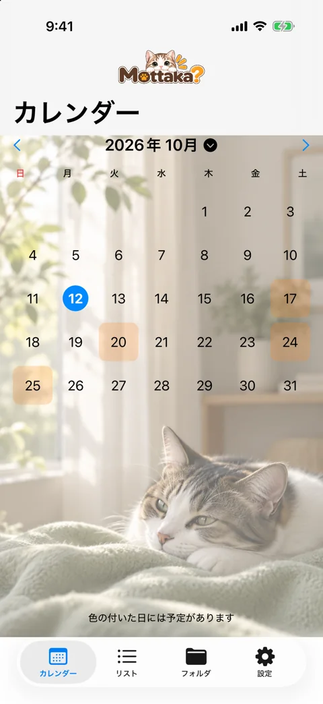
使いたい日をタップ。次の「持ち物予定」で「リストを追加」を選び、対象のリストをタップします。
iPadでも同じ操作

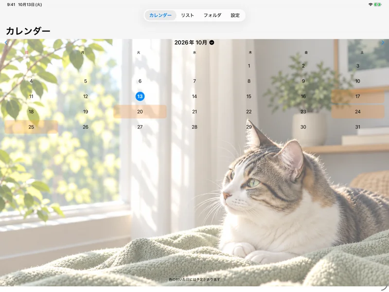
広い画面でも日付から操作します。同じ日に複数のリストを登録でき、同じリストの重複登録はできません。
予定登録の3ステップ
日付を開いて「リストを追加」

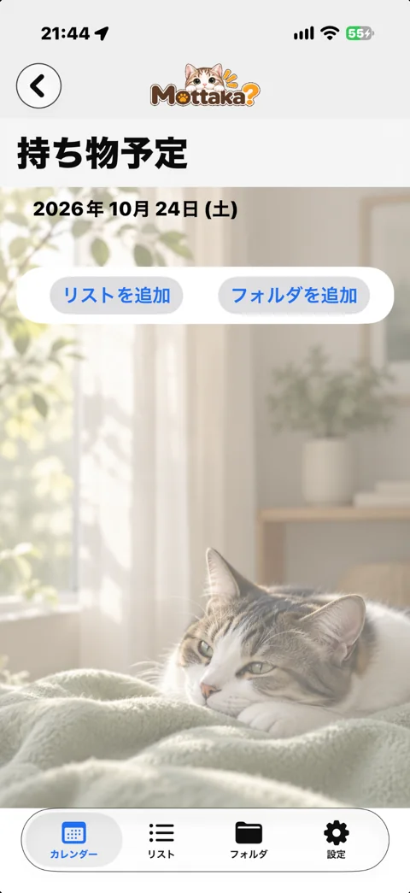
カレンダーで使う日を選び、「持ち物予定」の「リストを追加」をタップします。例は2026年10月24日です。
登録するリストを選ぶ

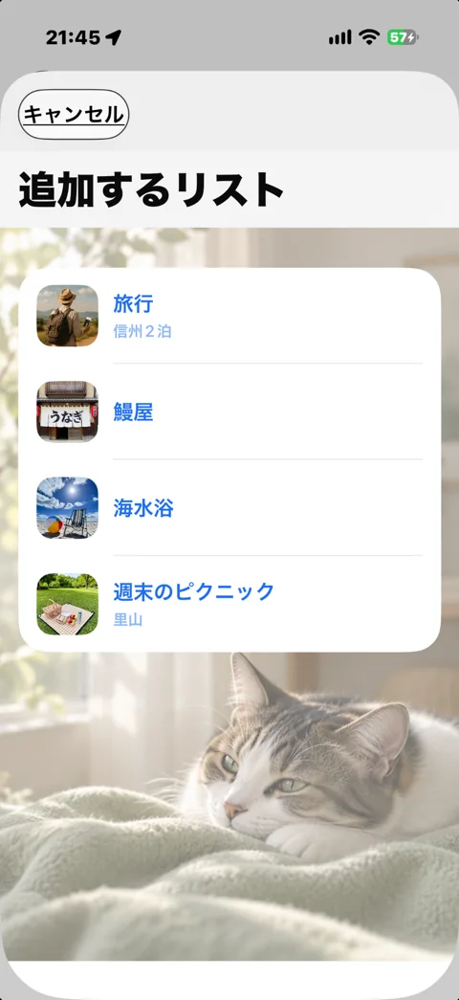
「追加するリスト」で「週末のピクニック」をタップ。すぐに登録され、この画面が閉じます。別の保存操作は不要です。
予定に追加されたことを確認

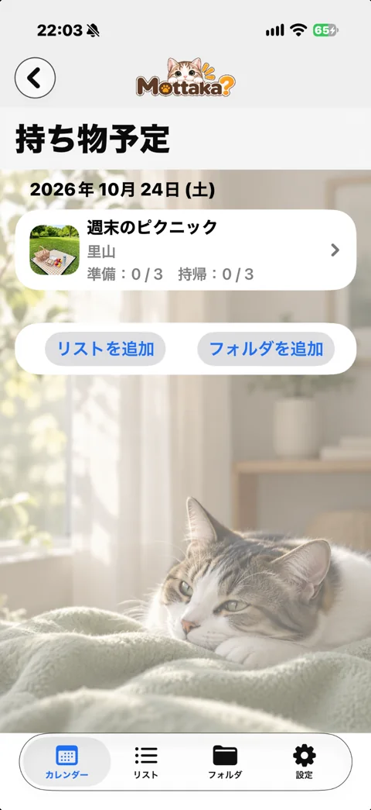
「持ち物予定」に「週末のピクニック」が表示されれば登録完了です。リスト名をタップして、持ち物のチェックへ進みます。
詳しい操作と注意点
- 「カレンダー」タブで使う日付をタップします。月は左右の矢印や横スワイプで移動できます。上部の年月をタップすると「年月を指定」から移動できます。
- 「持ち物予定」で「リストを追加」を選びます。
- 「追加するリスト」で対象をタップすると、その日へ登録されます。
- 別のリストも使う場合は「リストを追加」を繰り返します。
同じ日付に同じリストを単独で重複登録することはできず、「登録済み」と表示されます。別の日付には同じリストを登録できます。チェック状態は予定ごとに独立しています。複数予定は「並び替え」で順番を変更できます。
日付は未完了の予定があるとオレンジ、すべて完了すると緑で表示されます。今日の表示とは区別してください。リスト行の「準備」「持帰」は、対象項目に対する確認数です。持帰の数には「持ち帰らなかった」も含みます。
予定のリストを開くと「持ち物」画面でチェックできます。元のリストを編集すると、内容がまだ固定されていない予定にも変更が反映されます。一度完了して内容が固定された記録には、後からの元リスト編集は反映されません。
予定の「削除」はチェック記録の削除です。「持ち物予定」の行を左にスワイプし「削除」を選びます。元のリスト・持ち物は残りますが、その予定とチェック記録は「削除済み」から復元できません。フォルダの登録を削除すると、その日のフォルダ内のリスト予定・チェック記録も削除されます。
4. 出発前チェック
予定のリストを開き、「出発前」で持ち物を確認します。
名前・状態アイコンをタップ

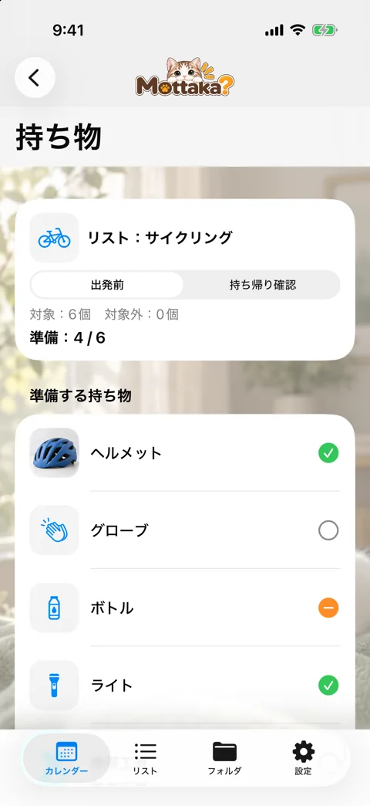
○ 未確認 → ✓ 準備済み → − 持っていかない、と切り替わります。写真のタップは拡大表示です。
「今回対象外」にする3ステップ
同じ「レジャーシート」の操作前・途中・操作後を見比べてください。
対象外にする持ち物を選ぶ

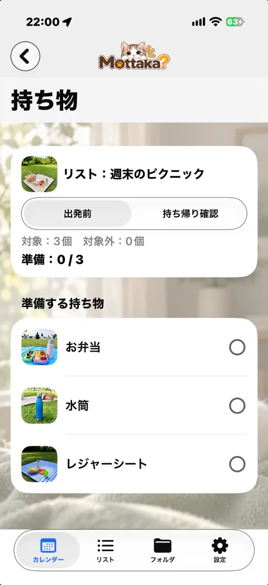
「出発前」で「レジャーシート」を対象外にする例です。操作前は「対象：3個」「対象外：0個」です。
左へスワイプして「対象外」

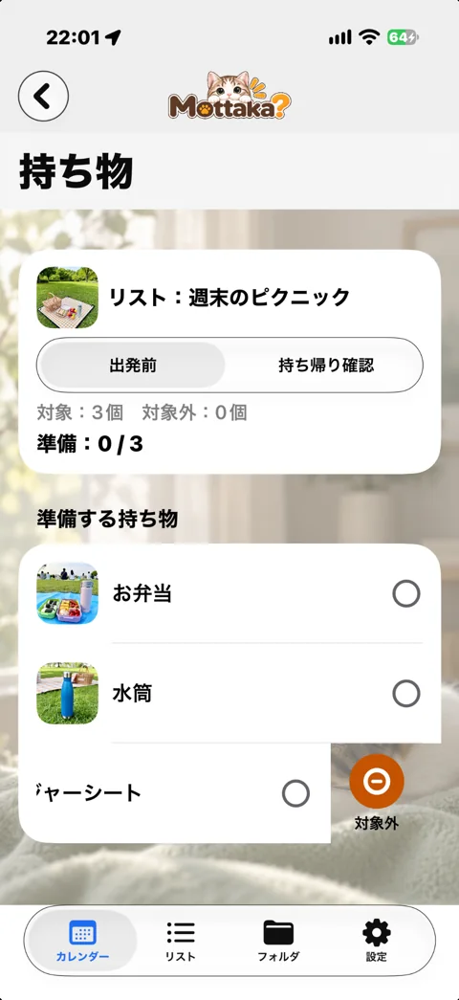
「レジャーシート」の行を右から左へ動かし、右側のオレンジ色の「対象外」をタップします。まだ押す前なので件数は変わっていません。
対象外へ移ったことを確認

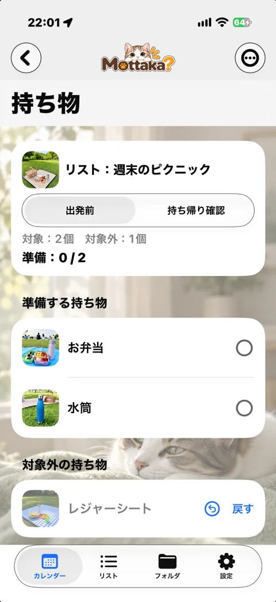
「対象：2個」「対象外：1個」に変わり、「レジャーシート」が「対象外の持ち物」へ移ります。「戻す」で対象に戻せます。
対象：3個 → 2個 ／ 対象外：0個 → 1個
「対象外」は準備・持ち帰り両方の対象数から外す操作です。元のリストからは削除されません。名前・状態アイコンのタップで選ぶ「持っていかない」の−とは別で、−は持ち帰り確認の対象に残ります。
詳しい操作と注意点
- カレンダーの予定から対象のリストを開きます。
- 上部で「出発前」を選びます。
- 持ち物の名前・状態アイコン部分をタップし、必要な状態にします。写真部分は拡大表示の操作です。
| 表示 | 意味 |
|---|---|
| 灰色の○ | 未確認 |
| 緑のチェック | 準備済み |
| オレンジの－ | 持っていかない |
もう一度タップすると灰色の○に戻ります。上部の「準備」の数には「準備済み」と「持っていかない」の両方が含まれます。
今回の対象から外す
- 今回はチェック対象にしない項目を左へスワイプして「対象外」を選びます。
- 項目は「対象外の持ち物」へ移り、出発前・持ち帰り確認の対象数から外れます。
- 戻すには、対象外の項目の名前または「戻す」をタップします。メニューの「すべて対象に戻す」でも戻せます。
「持っていかない」と「対象外」は別です。オレンジの－にするだけでは、持ち帰り確認の対象から外れません。今回まったく確認しない物は「対象外」にしてください。対象外にしても元のリストからは削除されず、他の日の予定には影響しません。
5. 持ち帰り確認（帰宅時チェック）
帰る前に「持ち帰り確認」へ。準備が未確認の物も確認できます。
持ち帰りの結果を確認する

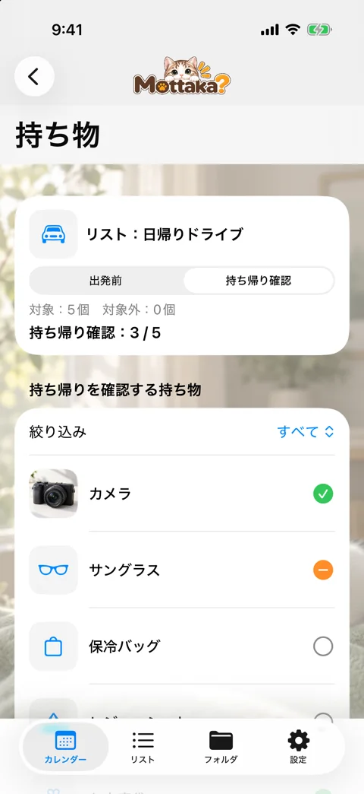
名前・状態アイコンをタップし、✓ 持ち帰り済み／− 持ち帰らなかったを記録します。「絞り込み」で未確認だけを探せます。
対象が1個以上あり、すべて確認して画面を離れると完了。持ち物0個や全件対象外の場合は完了しません。
詳しい操作と注意点
- 同じ予定のリストを開き、「持ち帰り確認」を選びます。
- 持ち物の名前・状態アイコン部分をタップします。
- 灰色の○「未確認」→緑のチェック「持ち帰り済み」→オレンジの－「持ち帰らなかった」→未確認の順に切り替わります。
- 必要に応じて「絞り込み」で「未確認」などを選び、残りを確認します。
- すべて確認し、「戻るとこの予定を完了します」が表示されたら前の画面へ戻ります。
対象の持ち物が1個以上あり、すべてが「持ち帰り済み」または「持ち帰らなかった」なら、画面を離れると完了します。出発前が未確認でも完了できます。全項目が対象外の場合や、持ち物が0個の場合は完了しません。「持ち帰らなかった」は、消費・処分・置いてきたなどの結果を確認した状態です。
完了後も記録を開いて状態を変更できます。「未確認」に戻すなど、条件を満たさなくなると未完了になり、再び全件を確認して戻ると完了します。ただし、一度固定された記録の内容は、元リストの編集には追従しません。
現地で購入した物を確認したいとき
専用の「現地購入品」機能はありません。まだ内容が固定されていない予定では、元のリストに持ち物を追加して、その予定の持ち帰り確認に使えます。既に完了した記録には追加が反映されないため、新しいリスト・予定として管理してください。出発前の準備済みチェックを付ける必要はありません。
6. Mottaka Plus 買い切り
Plus限定 フォルダ・壁紙や表示設定・iCloud Driveバックアップを使えます。
機能と価格を確認して購入

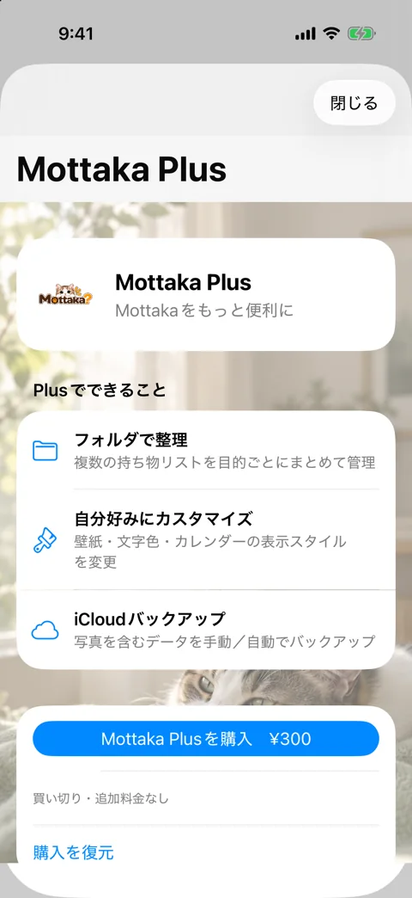
「設定」→「Mottaka Plus」から開きます。購入済みなのに使えない場合は「購入を復元」を選びます。
画像は既存のローカルStoreKitテスト時の表示例です。価格は画像の金額ではなく、実際の購入画面で確認してください。フォルダ・壁紙の操作画面は準備中です。
詳しい操作と注意点
購入と購入の復元
- 「設定」→「Mottaka Plus」を開きます。Plus限定機能を選んだときにも紹介画面が開きます。
- 表示される価格を確認し、「Mottaka Plusを購入」のボタンからApp Storeの案内に従います。価格は購入画面の表示をご確認ください。
- 確認が完了すると「Mottaka Plus 購入済み」になります。
購入済みなのに機能が使えない場合は、購入に使用したApp Storeのアカウントを確認し、未購入表示のPlus画面で「購入を復元」を選びます。「購入状況を確認中…」の間は判定を待ってください。「価格を確認中…」から進まない場合は「商品情報を再確認」を使えます。
「購入を復元」はデータを戻す操作ではありません。Plusの購入権利を確認する操作です。リストや写真を戻すにはバックアップから復元を使います。
フォルダで整理する Plus限定
- 「フォルダ」タブで「フォルダを追加」を選び、名前・「解説」・色を入力して「保存」します。
- フォルダを開き「リストを追加」から既存のリストを選びます。
- 「並び替え」で所属リストの順番を変更できます。行を左へスワイプして「外す」と、所属だけを解除します。
- 日付の「持ち物予定」→「フォルダを追加」から、まとめて予定へ登録できます。
フォルダはリストの複製ではなく、既存リストをまとめるものです。同じリストを複数フォルダに入れられます。フォルダ内の編集は元のリストにも反映されます。フォルダの「複製」「編集」「削除」は一覧のスワイプ操作から選びます。フォルダを削除しても元のリスト・持ち物は残ります。削除済みリストのようなフォルダ復元画面はありません。カレンダー上のフォルダ予定を削除する操作とは別です。必要な予定・記録を確認してから整理してください。
壁紙と表示設定 Plus限定
- 「設定」→「壁紙」を開きます。
- 「写真を選ぶ」で壁紙を選び、プレビューを確認します。
- 「文字色」（自動・黒・白）、「壁紙の読みやすさ」（なし・薄く・標準）、「予定日の表示」を調整します。
- 「戻る」で設定画面へ戻ります。標準画像に戻すときは「標準壁紙に戻す」を使います。
予定日の表示は「枠なし・半透明」「枠あり・半透明」「枠あり・不透明」です。初期設定は「枠なし・半透明」。ユーザー設定壁紙は端末の向きにかかわらず優先され、標準壁紙はiPad横向きだけ専用画像になります。
購入権利を確認できず無料状態になっても、既存のリスト・予定・画像・壁紙・バックアップが自動で消えることはありません。ただし、Plus限定の変更や新規操作は制限されます。
7. バックアップと復元 Plus限定
Plus限定 「設定」→「iCloudバックアップ」から操作します。
復元すると、受け取る端末の現在データが置き換わります。差分マージ・iPhoneとiPadの自動同期はしません。自動バックアップは主端末1台だけでONにしてください。初期値はOFFです。
- 保存する
「今すぐバックアップ」を選びます。
- 状態を確認する
作成日時と保存確認状態を確認。確認待ちなら送信状態を確認します。
- 必要なときだけ復元する
候補の作成日時と置き換えの注意を読み、開始します。
バックアップ・復元の現行画面は既存画像にないため、写真は掲載していません。画面写真を用意できるまでは、下の詳しい手順をご確認ください。
詳しい操作と注意点
iCloud Driveを利用できるApple Accountでサインインし、iCloud Driveを有効にしてください。「設定」→「iCloudバックアップ」から操作します。リスト・持ち物・予定・チェック状態・フォルダ・取り込んだ写真や壁紙・表示設定を保存します。Plusの購入権利と、この端末の自動バックアップON／OFF設定はバックアップから復元する対象ではありません。
手動バックアップ
- 「今すぐバックアップ」をタップします。
- 処理が終わったら、作成日時とiCloud保存状態を確認します。
- 確認待ちが続く場合は「送信状態を確認」を使います。作成直後は約5秒間隔で最大約30秒の確認を行う場合がありますが、そこで確認が終わらなくてもiCloudの送信自体が中止されるわけではありません。
作成日時と確認待ちの見方
- 最終バックアップ（作成日時）：確認済みのバックアップに含まれるデータの時点です。復元候補の日時と同じ基準です。
- iCloud保存確認済み：必要なファイルの保存状態を確認できています。
- 確認待ちバックアップ（作成日時）：まだ送信確認が終わっていない世代です。「最終バックアップ」と別に表示されます。
- 現在の保存状態を確認できません／送信状態を確認できません：現在の状態を確認できていません。過去の日時表示だけで最新データが保存済みと判断しないでください。
10月15日作成のバックアップを10月18日に送信確認しても、作成日時は10月15日のままです。10月18日の編集内容を含むという意味ではありません。
自動バックアップ
- 主に使う端末で「自動バックアップ」をONにします。新規インストール時はOFFです。既存の設定は維持されます。
- 内容に変更があり、本端末の前回作成から24時間以上経過すると、起動・アプリ復帰などの次の実行機会に作成されます。本端末の作成履歴がない場合は、条件確認後に初回の作成が可能です。
- 「次回の自動バックアップが可能になる日時」は目安です。毎日その時刻に実行する予約ではありません。
送信確認の遅延によって、確認完了後にさらに24時間待ち直すことはありません。ただし未確認・読込不能なバックアップがある場合は、安全のため新規自動作成を保留します。同じ内容を保存し直すこともありません。
iPhone・iPadで使うとき
自動バックアップは、主に使用する1台だけでONにしてください。設定は端末ごとに独立しています。同じApple Accountで同じiCloud Driveを使っても、アプリ内データは自動同期されません。2台の編集内容を後から自動で結合する機能もありません。
- まず、受け取る端末に残したいデータがないか確認します。必要なら、その端末の内容を手動バックアップし、保存状態と作成日時を確認します。
- 次に主端末で送りたいデータをバックアップし、保存確認済みになったことと作成日時を確認します。
- 受け取る端末で、主端末から送ったバックアップの日時と一致する候補を確認して復元します。目的の候補を確認できない場合は、復元を進めないでください。送り元の端末は置き換わりません。
復元候補には現在、作成元端末名は表示されません。同日の複数世代を1件にまとめて表示する場合もあるため、必要なバックアップが候補にあるか必ず確認してください。同日複数世代が存在する場合は、誤削除を避けるため自動整理を見送ります。そのため保存容量が増えることがあります。「必ず直近7日分だけになる」「両端末の履歴を必ず選べる」という保証ではありません。同日中に新しいバックアップを作ると、以前の候補が一覧に出なくなる場合があります。目的の候補が見つからない場合は、ファイルを手動削除せずお問い合わせください。
バックアップから復元
復元は追加ではなく、復元先端末の現在のデータを置き換える操作です。差分マージはしません。バックアップ作成後の変更は、そのバックアップには含まれません。現在の内容を残したい場合は、先に手動バックアップを作り、保存状態と復元候補を確認してください。アプリ内部の安全退避を、自分でいつでも選んで戻せるバックアップの代わりにしないでください。
- 「バックアップから復元」を開き、作成日時を確認します。
- 対象の「復元する」を選びます。「現在確認できません」の候補は「再確認」を使います。候補が更新されないときは、一度戻って開き直してください。
- 確認画面を読み、復元を開始します。開始後はキャンセルできません。
- 検証・切り替えが完了するまで待ちます。失敗時はアプリの案内に従ってください。独自にファイルを削除したり、復元中にアプリを削除したりしないでください。
復元時は全ファイルの完全性を確認し、現在データを退避してから切り替えます。ただし、候補が表示されるだけで復元成功を保証するものではありません。「このバックアップは使用できません」やアップデートを求める表示の候補は、そのまま復元できません。購入情報の確認には「購入を復元」を使用します。
8. よくある質問
リストが見つかりません
まず「リスト」タブと「設定」→「削除済み」を確認します。カレンダーに登録されているかどうかと、元のリストが残っているかは別です。別端末で作成したリストは自動では届きません。
削除したリスト・持ち物を戻したい
削除済み項目の復元を行います。所属リストも削除済みなら、先にリストを戻します。完全削除や予定の削除はこの画面から戻せません。
Plusが利用できません
購入に使ったApp Storeのアカウントと通信状態を確認し、未購入表示のPlus画面で「購入を復元」を試します。データのバックアップ復元では購入権利を戻せません。解消しない場合は、表示メッセージとVersion／Build番号を添えてお問い合わせください。
iPhoneとiPadで同じデータを使いたい
主端末からバックアップして、もう一方へ復元します。受け取る側の現在データは置き換わります。両端末で別々に編集しても、差分の自動統合はできません。
バックアップがすぐに実行されません
自動設定がONか、変更があるか、本端末の前回作成から24時間経っているかを確認します。未確認・読込不能な世代やiCloudの通信状態によって保留されます。急ぐ場合は「今すぐバックアップ」を使い、日時だけでなく送信状態まで確認してください。
準備が全部済んだのに、日付が完了になりません
完了判定は持ち帰り確認です。対象が1個以上あり、全件を「持ち帰り済み」または「持ち帰らなかった」にして画面を離れたか確認してください。
不具合を相談したい
「設定」右上のアプリ情報でVersion／Build番号を確認し、端末名・操作手順・表示されたメッセージを添えてご連絡ください。パスワード・決済情報・個人情報を含む画面は送らないでください。